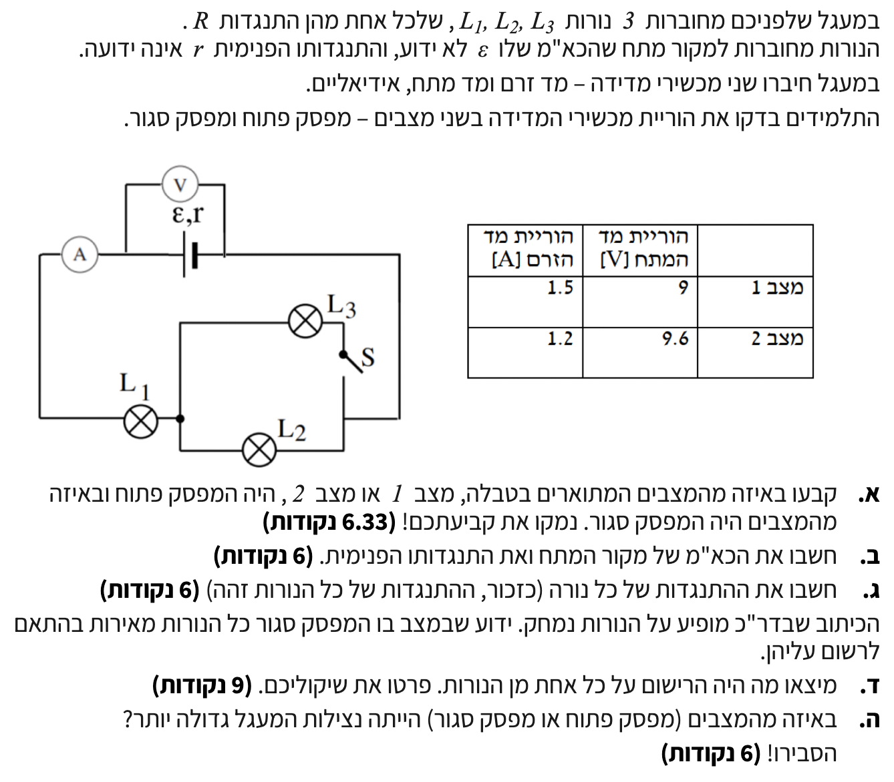

פתרון שאלת מתכונת - מעגלי זרם
מתכונת חשמל 28/5 - שאלה 2
פתרון מלא, מפורט ומוסבר צעד-אחר-צעד.
עודכן:
--- --:--:--

[תמונת השאלה המקורית]
לא נמצאה תמונה בשם question-image.png באותה תיקייה.
מה נתון: שלוש נורות בעלות התנגדות זהה. מדידות מהטבלה - במצב 1 זרם של $1.5A$, ובמצב 2 זרם של $1.2A$.
מה מחפשים: לקבוע איזה מצב (1 או 2) מתאים למפסק סגור ואיזה למפסק פתוח.
נוסחאות ועקרונות בשימוש (מהדף):
\( V = \varepsilon - Ir \)
\( I = \frac{V}{R} \)
\( \frac{1}{R_T} = \frac{1}{R_1} + \frac{1}{R_2} + ... \)
\( R_T = R_1 + R_2 + ... \)
פתרון צעד-אחר-צעד:
שלב 1: ניתוח ההתנגדות השקולה בכל מצב
מכיוון שלשלוש הנורות התנגדות זהה, נסמן את ההתנגדות של כל אחת מהן ב-$R$. כעת נמצא את ההתנגדות החיצונית השקולה ($R_T$) עבור שני המצבים:
- כאשר המפסק פתוח: הענף של נורה $L_3$ מנותק, לכן הזרם לא זורם דרכה. הנורות $L_1$ ו-$L_2$ מחוברות בטור. ניעזר בנוסחה לחיבור טורי לקבלת ההתנגדות:
\( R_{open} = R + R = 2R \)
- כאשר המפסק סגור: הנורות $L_2$ ו-$L_3$ מחוברות במקביל. ניעזר בנוסחה לחיבור במקביל כדי למצוא את ההתנגדות של קבוצה זו:
\( \frac{1}{R_{2,3}} = \frac{1}{R} + \frac{1}{R} = \frac{2}{R} \implies R_{2,3} = \frac{R}{2} = 0.5R \)
הקבוצה הזו מחוברת בטור לנורה $L_1$, ולכן ההתנגדות החיצונית הכוללת במצב סגור תהיה:
\( R_{closed} = R + 0.5R = 1.5R \)
שלב 2: הקשר בין ההתנגדות לזרם לפי חוק אוהם
קיבלנו שההתנגדות החיצונית במצב פתוח גדולה יותר מההתנגדות במצב סגור ($2R > 1.5R$).
נשלב את חוק אוהם למעגל חיצוני (\( V = I \cdot R_T \)) עם נוסחת מתח ההדקים (\( V = \varepsilon - Ir \)):
\( I \cdot R_T = \varepsilon - I \cdot r \implies I(R_T + r) = \varepsilon \implies I = \frac{\varepsilon}{R_T + r} \)
מכאן שהזרם הראשי במעגל נמצא ביחס הפוך לסך ההתנגדות. כלומר, ככל שההתנגדות הכוללת גדולה יותר, כך הזרם שזורם במעגל קטן יותר.
מסקנה: מצב 1 בטבלה (זרם גבוה, $1.5A$) שייך להתנגדות הקטנה ולכן זהו המפסק סגור. מצב 2 (זרם נמוך, $1.2A$) שייך להתנגדות הגדולה, ולכן זהו המפסק פתוח.
מה נתון: מצב 1 (סגור): $V=9V, I=1.5A$. מצב 2 (פתוח): $V=9.6V, I=1.2A$.
מה מחפשים: את הכא"מ $\varepsilon$ ואת ההתנגדות הפנימית $r$ של מקור המתח.
נוסחאות ועקרונות בשימוש (מהדף):
\( V = \varepsilon - Ir \)
פתרון צעד-אחר-צעד:
מד המתח מתחבר ישירות להדקי המקור ומודד את מתח ההדקים ($V$). נבנה מערכת משוואות על ידי הצבת הנתונים משני המצבים לתוך נוסחת מתח ההדקים:
\[ (1)\ \ 9 = \varepsilon - 1.5r \]
\[ (2)\ \ 9.6 = \varepsilon - 1.2r \]
נחסר את משוואה (1) ממשוואה (2) כדי לבודד את $r$:
\[ 9.6 - 9 = (\varepsilon - 1.2r) - (\varepsilon - 1.5r) \]
\[ 0.6 = 0.3r \implies r = 2\,\Omega \]
כעת, נציב את הערך של ההתנגדות הפנימית באחת המשוואות (נבחר במשוואה 1) כדי למצוא את הכא"מ:
\[ 9 = \varepsilon - 1.5 \cdot 2 \]
\[ 9 = \varepsilon - 3 \implies \varepsilon = 12\,\text{V} \]
מסקנה: הכא"מ הוא 12V וההתנגדות הפנימית היא 2Ω.
מה נתון: במצב 2 (פתוח) הזרם $1.2A$ ומתח ההדקים $9.6V$. כמו כן, מצאנו בסעיף א' שבמצב זה ההתנגדות השקולה היא $R_T = 2R$.
מה מחפשים: את התנגדותה של נורה בודדת, $R$.
נוסחאות ועקרונות בשימוש (מהדף):
\( I = \frac{V}{R} \)
פתרון צעד-אחר-צעד:
לפי חוק אוהם לחלק מעגל (כאשר מתייחסים למעגל החיצוני בלבד), ניתן לומר שמתח ההדקים $V$ הנופל על המעגל החיצוני קשור לזרם הראשי בו באמצעות הקשר \( V = I \cdot R_T \).
נציב את הנתונים הידועים לנו ממצב 2 (מפסק פתוח):
\[ 9.6 = 1.2 \cdot (2R) \]
\[ 9.6 = 2.4R \implies R = \frac{9.6}{2.4} = 4\,\Omega \]
מסקנה: התנגדותה של כל נורה היא 4Ω.
מה נתון: במצב בו המפסק סגור (מצב 1), כל הנורות מאירות בהתאם לערכים הרשומים עליהן.
מה מחפשים: את הערכים שרשומים על כל אחת מהנורות (מתח והספק תקינים מקסימליים).
נוסחאות ועקרונות בשימוש (מהדף):
\( I = \frac{V}{R} \)
\( P = VI \)
פתרון צעד-אחר-צעד:
נתון שבמצב סגור (בו הזרם הראשי הוא $1.5A$) הנורות עובדות בתנאים נומינליים. ננתח את החלוקה של הזרמים והמתחים לכל רכיב במצב זה:
- נורה $L_1$: מחוברת בטור למקור, לכן הזרם הראשי המלא עובר דרכה ($I_1 = 1.5A$).
נמצא את המתח עליה בעזרת חוק אוהם: \( V_1 = I_1 \cdot R = 1.5 \cdot 4 = 6\,\text{V} \).
נמצא את ההספק שהיא צורכת: \( P_1 = V_1 \cdot I_1 = 6 \cdot 1.5 = 9\,\text{W} \).
- נורות $L_2, L_3$: מחוברות במקביל זו לזו ושתיהן בעלות התנגדות זהה ($4\,\Omega$). הזרם הראשי מתפצל שווה בשווה: \( I_2 = I_3 = 0.75A \).
המתח עליהן: \( V_2 = V_3 = I_2 \cdot R = 0.75 \cdot 4 = 3\,\text{V} \).
ההספק שכל אחת מהן צורכת: \( P_2 = P_3 = V_2 \cdot I_2 = 3 \cdot 0.75 = 2.25\,\text{W} \).
מסקנה: הרישום על נורה L1 הוא 6V, 9W, והרישום על נורות L2 ו-L3 הוא 3V, 2.25W.
טיפ מורה:
שימו לב לדקות הפיזיקלית החשובה! אף על פי שלנורות יש התנגדות זהה, הן אינן נורות מאותו דגם (אינן זהות לחלוטין בנתוני היצרן שלהן). מכיוון שנתון שכל הנורות מאירות בדיוק בהתאם לרישום שלהן במצב 1, כל נורה צורכת באותו רגע את ההספק הנומינלי שלה. בגלל שהזרם בנורה $L_1$ כפול מהזרם בשאר הנורות, הרישום עליה חייב להיות שונה כדי שהיא תעבוד בצורה תקינה במקביל אליהן ולא תישרף.
מה נתון: נתוני המעגל ומכשירי המדידה עבור מצב מפסק פתוח ומצב מפסק סגור.
מה מחפשים: לקבוע ולהסביר באיזה מצב מבין השניים נצילות המעגל גדולה יותר.
נוסחאות ועקרונות בשימוש (מהדף):
\( P = VI \)
עקרון: שימור אנרגיה (הגדרת נצילות)
פתרון צעד-אחר-צעד:
נצילות המעגל ($\eta$) מוגדרת על פי עקרון שימור האנרגיה כיחס בין ההספק המנוצל במעגל החיצוני ($P_{out}$) לבין ההספק הכולל שמספק המקור ($P_{total}$).
מכיוון ש-\( P_{out} = V \cdot I \) ו-\( P_{total} = \varepsilon \cdot I \), ניתן לבטא את הנצילות במעגל פשוט כיחס בין מתח ההדקים לכא"מ המקור:
\( \eta = \frac{V \cdot I}{\varepsilon \cdot I} = \frac{V}{\varepsilon} \).
נציב את הנתונים שמצאנו עבור שני המצבים:
- במצב סגור (מצב 1): \( \eta = \frac{9}{12} = 0.75 \implies 75\% \)
- במצב פתוח (מצב 2): \( \eta = \frac{9.6}{12} = 0.80 \implies 80\% \)
ההסבר הפיזיקלי: במצב מפסק פתוח, ההתנגדות החיצונית השקולה במעגל גדולה יותר. כתוצאה מכך, הזרם יורד ולכן "מפל המתח הפנימי" (\(I \cdot r\)) בתוך המקור קטן. פחות אנרגיה מתבזבזת על התנגדות המקור, ויותר ממנה עוברת למעגל החיצוני, מה שמעלה את הנצילות.
מסקנה: במצב שבו המפסק פתוח (מצב 2) נצילות המעגל גדולה יותר.